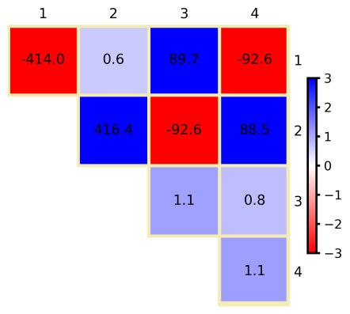
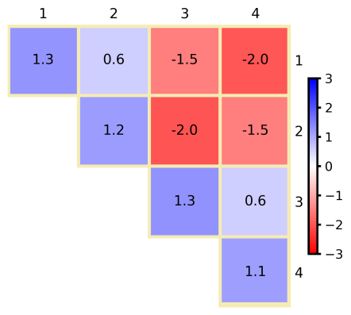

定域能分解（Local Energy Decomposition）¶
DLPNO-CCSD(T) 方法提供非常准确的相对能量， 并能成功预测许多化学现象。 为便于解释耦合簇结果，我们发展了定域能分解 （Local Energy Decomposition，LED）分析 wolfgang2016led,altun2018open,10.1002/wcms.1442， 它可将总 DLPNO-CCSD(T) 能量（包括参考能量） 划分为具有物理意义的贡献。 LED 方案的实用指南见 led.cs 和 led.example 两节。
该方案的应用实例见 文献 led2017, lu2018formation, lu2019london, ghafarian2019physical, doi:10.1021/jacs.9b13725, Beck2021。
作为一点告诫，我们强调只有总能量是可观测量， 其分解在某种程度上是任意的。 尽管如此，LED 分析在我们看来物理基础良好且合乎逻辑， 易于应用，且与 DLPNO-CCSD(T) 计算相比通常只有可忽略的计算开销。 从 ORCA 4.1 开始，LED 方案对闭壳层和开壳层计算均可用。 代码也已并行化并提高了效率。
LED 方案不对分子间相互作用的强度作任何假设， 因此它在整个势能面上都保持有效和自洽。 替代方案（如流行的对称性适配微扰理论）本质上是微扰性的， 因此最适合应用于弱相互作用体系。
LED 分析的思想相当简单。 在局域相关方法中，占据轨道是定域的， 可以方便地指派给分子中预定义的片段。 对于相关能也可以做同样的事：用参照一对占据轨道的对相关能来表述。 这样，相关能和参考能量都可以分解为片体内和片体间贡献。 分片由用户定义。可以定义任意数量的片段。 若定义了多于 2 个片段，则对每一对片段打印片体间相互作用。
LED 方案一个非常重要的特性是能够区分 DLPNO-CCSD(T) 相关能的色散部分和非色散部分。 简言之，我们利用这样一个事实： 每个 CCSD 对相关能贡献都可表示为 从一对占据轨道到虚空间的双激发之和。 由于在 DLPNO-CCSD(T) 方案中虚空间由本质上局域的 对自然轨道（Pair Natural Orbitals，PNO）张成， 整个相关能可按双激发类型分解， 取决于占据轨道和虚轨道定域在何处。 对每一对片段，对应于位于不同片段上的瞬时局域偶极之间 相互作用的所有激发之和， 在 LED 框架中定义了两个片段之间所谓的"伦敦色散"吸引。
对于两个片段的体系， 可以以构成相互作用超分子的、几何和电子均弛豫的片段为参考点。 相对于该参考态，片段之间的结合能可写为：
其中 \(\Delta E_{geo-prep}\) 是将片段从其平衡构型 扭曲到相互作用几何结构所需的能量 （在其他能量分解方案中也称为"应变"，strain）。 \(\Delta E_{el-prep}^{ref.}\) 项表示电子准备能， 描述将片段带到对相互作用最优的电子结构需要多少能量。 \(E_{exch}^{ref.}\) 是片体间交换相互作用 （在我们的形式中它总是给出成键贡献）， \(E_{elstat}^{ref.}\) 是片段变形电子云之间的静电相互作用能。 这些项之和在闭壳层情形下给出 Hartree-Fock 能量， 在开壳层情形下给出 QRO 行列式的能量。 最后，相关能被分解为色散的 \(E^{C-CCSD}_{dispersion}\) 和非色散的 \(\Delta E^{C-CCSD}_{non-dispersion}\) 贡献， 再加上相互作用能的三激发校正项 \(\Delta E^{C-(T) }_{int}\)。
\(E^{C-CCSD}_{dispersion}\) 项包含上述强对的伦敦色散贡献 加上弱对的片体间分量，后者本质上是色散性的。 \(\Delta E^{C-CCSD}_{non-dispersion}\) 相关项 用于修正参考能中近似包含的对结合能的贡献， 例如它抵消 HF 方法典型的过极化。 它包含来自强对的所谓电荷转移激发 \(E_{C-SP}^{CT(X\rightarrow Y) } + E_{C-SP}^{CT(X\leftarrow Y) }\)， 即所有不保持每个片段内电荷的双激发贡献之和。 此外，非色散项还包括来自强对（\(\Delta E_{el-prep}^{C-SP}\)） 和弱对（\(\Delta E_{el-prep}^{C-WP}\)）的电子准备。 最后，\(\Delta E^{C-(T) }_{int}\) 表示 三激发校正对片段间相互作用能的贡献。 在 LED 方案中，该项可进一步分解为片体内和片体间分量。 例如，这可用于估算三激发校正项的伦敦色散贡献， 如文献 lu2018formation 所建议。
"定域能分解"（Local Energy Decomposition，LED） 分析 wolfgang2016led,altun2018open,10.1002/wcms.1442 是一种通过将 DLPNO-CCSD(T) 能量分解为具有物理意义的贡献 来洞察分子间相互作用本质的工具。 例如，该途径可用于分解一对相互作用片段之间的 DLPNO-CCSD(T) 相互作用能，详见 spectroscopyproperties.led 一节。 该方案与分解相互作用能的替代方式的有用比较见 文献 10.1002/qua.26339, altun2018local, altun2018therole。
闭壳层 LED（Closed shell LED）¶
LED 分别分解 DLPNO-CCSD(T) 能量的参考（Hartree-Fock）部分和相关部分。 默认情况下，参考能量的分解使用 RI-JK 近似。 RIJCOSX 变体效率高得多，对大体系的标度也更有利，同样可用， 详见 led.features 一节 及 10.1002/qua.26339。
Note
对于弱相互作用体系，通常推荐 !TightPNO 设置。
基本用法（Basic Usage）¶
在 ORCA 中获得该分解只需定义片段
并在简单输入行中指定 !LED 关键词。
示例（Example）¶
作为一个例子，可用如下输入文件在 LED 框架内 分析 H\(_2\)O 与卡宾 CH\(_2\) 在 PBE0-D3/def2-TZVP 优化几何下的相互作用：
相应的输出文件如下所示。DLPNO-CCSD(T) 能量分量 在输出的不同部分打印如下：
E(0) ... -114.913309038
E(CORR)(corrected) ... -0.350582526
Triples Correction (T) ... -0.006098691
E(CCSD(T)) ... -115.269990255
在输出的 LED 部分开头，给出片段信息 以及定域 MO 向片段的指派。
===========================================================
LOCAL ENERGY DECOMPOSITION FOR DLPNO-CC METHODS
===========================================================
Maximum Iterations for the Localization .. 600
Tolerance for the Localization .. 1.00e-06
Number of fragments = 2
Fragment 1: 0 1 2
Fragment 2: 3 4 5
Populations of internal orbitals onto Fragments:
0: 1.000 0.000 assigned to fragment 1
1: 0.000 1.000 assigned to fragment 2
2: 1.022 0.008 assigned to fragment 1
3: 0.001 0.999 assigned to fragment 2
4: 0.001 0.999 assigned to fragment 2
5: 1.018 0.000 assigned to fragment 1
6: 1.019 0.000 assigned to fragment 1
7: 0.006 1.013 assigned to fragment 2
8: 0.000 1.016 assigned to fragment 2
随后是 Hartree-Fock 能量向片体内和片体间贡献的分解。 它基于占据轨道的定域化。
----------------------------------------
REFERENCE ENERGY E(0) DECOMPOSITION (Eh)
----------------------------------------
Nuclear repulsion = 28.952049689006
One electron energy = -214.430545074583 (T= 114.825132245389, V= -329.255677319972)
Two electron energy = 70.565186347093 (J= 71.658914661909, K= -1.093728314816)
--------------------
Total energy = -114.913309038483
Consistency check = -114.913309038483 (sum of intra- and inter-fragment energies)
Kinetic energy = 114.825132245389
Potential energy = -229.738441283873
--------------------
Virial ratio = 2.000767922417
-------------------------------------------
INTRA-FRAGMENT REF. ENERGY FOR FRAGMENT 1
-------------------------------------------
Nuclear repulsion = 6.037208782874
One electron energy = -63.553431032444 (T= 38.870491681225, V= -102.423922713669)
Two electron energy = 18.675214766985 (J= 18.935443192480, K= -0.260228425495)
-------------------
Total energy = -38.841007482585
Kinetic energy = 38.870491681225
Potential energy = -77.711499163811
-------------------
Virial ratio = 1.999241476056
-------------------------------------------
INTRA-FRAGMENT REF. ENERGY FOR FRAGMENT 2
-------------------------------------------
Nuclear repulsion = 9.103529882464
One electron energy = -123.025684625357 (T= 75.954640564164, V= -198.980325189521)
Two electron energy = 37.916781954190 (J= 38.739989208810, K= -0.823207254620)
-------------------
Total energy = -76.005372788703
Kinetic energy = 75.954640564164
Potential energy = -151.960013352867
-------------------
Virial ratio = 2.000667927913
----------------------------------------------------
INTER-FRAGMENT REF. ENERGY FOR FRAGMENTs 2 AND 1
----------------------------------------------------
Nuclear repulsion = 13.811311023669
Nuclear attraction = -27.851429416782
Coulomb repulsion = 13.983482260618
------------------
Sum of electrostatics = -0.056636132494 ( -35.540 kcal/mol)
Two electron exchange = -0.010292634701 ( -6.459 kcal/mol)
------------------
Total REF. interaction = -0.066928767195 ( -41.998 kcal/mol)
Sum of INTRA-fragment REF. energies = -114.846380271288
Sum of INTER-fragment REF. energies = -0.066928767195
---------------------
Total REF. energy = -114.913309038483
之后，对相关能进行第一次分解。 相关能的不同能量贡献（强对、弱对和三激发校正） 被分解为片体内和片体间贡献。 该分解基于占据轨道的定域化进行。
--------------------------------
CORRELATION ENERGY DECOMPOSITION
--------------------------------
--------------------------------------------------
INTER- vs INTRA-FRAGMENT CORRELATION ENERGIES (Eh)
--------------------------------------------------
Fragment 1 Fragment 2
----------------- -------------------
Intra strong pairs -0.136594658271 -0.209970193798 sum= -0.346564852069
Intra triples -0.002692277706 -0.002842791265 sum= -0.005535068971
Intra weak pairs -0.000001573694 -0.000002311734 sum= -0.000003885429
Singles contribution 0.000000000611 0.000000001058 sum= 0.000000001669
----------------- -------------------
-0.139288509061 -0.212815295738 sum= -0.352103804799
Interaction correlation for Fragments 2 and 1:
--------------------------------------------------
Inter strong pairs -0.003998018810 ( -2.509 kcal/mol)
Inter triples -0.000563621667 ( -0.354 kcal/mol)
Inter weak pairs -0.000015771468 ( -0.010 kcal/mol)
----------------------
Total interaction -0.004577411945 ( -2.872 kcal/mol)
Sum of INTRA-fragment correlation energies = -0.352103804799
Sum of INTER-fragment correlation energies = -0.004577411945
---------------------
Total correlation energy = -0.356681216744
之后，打印总能量（参考能量 + 相关能） 向片体内和片体间贡献分解的总结。
--------------------------------------------
INTER- vs INTRA-FRAGMENT TOTAL ENERGIES (Eh)
--------------------------------------------
Fragment 1 Fragment 2
------------------- -------------------
Intra REF. energy -38.841007482585 -76.005372788703 sum= -114.846380271288
Intra Correlation energy -0.139288509061 -0.212815295738 sum= -0.352103804799
------------------- -------------------
-38.980295991646 -76.218188084441 sum= -115.198484076087
Interaction of Fragments 2 and 1:
-------------------------------------
Interfragment reference -0.066928767195 ( -41.998 kcal/mol)
Interfragment correlation -0.004577411945 ( -2.872 kcal/mol)
----------------------
Total interaction -0.071506179140 ( -44.871 kcal/mol)
Sum of INTRA-fragment total energies = -115.198484076087
Sum of INTER-fragment total energies = -0.071506179140
---------------------
Total energy = -115.269990255228
因此，上面报告的分解允许人们仅基于占据轨道的定域化， 就将 DLPNO-CCSD(T) 能量的所有分量分解为片体内和片体间贡献。 为将片体内能量分量转换为对结合能的贡献， 必须对冻结在加合物中所取几何构型下的孤立单体 执行单点能计算，并减去相应的项。 请注意，也可以通过简单地计算几何弛豫片段的能量 来包含几何变形能（也称为"应变"） （更多信息见 spectroscopyproperties.led 一节）。
对于通常主导相关能的 DLPNO-CCSD 强对， 还执行并打印了基于占据轨道和 PNO 双重定域化的更精细分解。 相应地，来自强对的相关能被划分为 片体内、色散和电荷转移分量。 请注意，由于电荷转移激发，所得的片体内贡献（如下所示） 与上面得到的不同。
---------------------------------------------
DECOMPOSITION OF CCSD STRONG PAIRS INTO
DOUBLE EXCITATION TYPES (Eh)
---------------------------------------------
Foster-Boys localization is used for localizing PNOs
Intra fragment contributions:
INTRA Fragment 1 -0.132849855
INTRA Fragment 2 -0.209493798
Charge transfer contributions:
Charge Transfer 1 to 2 -0.005725404
Charge Transfer 2 to 1 -0.000899609
Dispersion contributions:
Dispersion 2,1 -0.001594204
Singles contributions:
Singles energy 0.000000002
关于上面报告的各项的更详细信息见
spectroscopyproperties.led 一节
和文献 wolfgang2016led。
通过在 %mdci 块中指定 "printlevel 3"，
可打印构成上述各项的所有单个双激发贡献。
最后，打印 DLPNO-CCSD 能量最重要各项的总结，
这些通常是标准应用中讨论的内容。
-------------------------------------------------
FINAL SUMMARY DLPNO-CCSD ENERGY DECOMPOSITION (Eh)
-------------------------------------------------
Intrafragment REF. energy:
Intra fragment 1 (REF.) -38.841007483
Intra fragment 2 (REF.) -76.005372789
Interaction of fragments 2 and 1:
Electrostatics (REF.) -0.056636132
Exchange (REF.) -0.010292635
Dispersion (strong pairs) -0.001594204
Dispersion (weak pairs) -0.000015771
Sum of non dispersive correlation terms:
Non dispersion (strong pairs) -0.348968665
Non dispersion (weak pairs) -0.000003885
请注意，"Non dispersion" 项包含除伦敦色散外相关能的所有分量 led2017,altun2018local。 对于强对，"Non dispersion" 包含电荷转移、 片体内双激发和单激发贡献。 对于弱对，它对应于片体内相关贡献。 为将非色散相关分量转换为对结合能的贡献， 必须对孤立单体执行单点能计算。
示例：分子间相互作用的 LED 分析¶
上一节的水-卡宾例子将用于演示 如何用 LED 分解分析两个片段之间的分子间相互作用 （请注意，除另有说明外所有能量以 a.u. 给出）。 如实际应用中常做的那样， 我们将使用在 DFT（PBE0-D3/def2-TZVP）理论水平优化的几何结构， 在其上计算 DLPNO-CCSD(T)（cc-pVDZ,TightPNO）单点能。 请注意，实践中推荐使用三-zeta 质量或更大的基组。 第一步，优化二聚体、H\(_2\)O 和 CH\(_2\) 的几何结构， 并计算 DLPNO-CCSD(T) 能量得到 \(E^{opt}_{dimer}\) 和 \(E^{opt}_{monomers}\)。 单体在其优化几何下的单点 DLPNO-CCSD(T) 能量的输入示例 以及这些运行输出文件中所需的能量如下：
3 structure (0 1) O -1.47291471015599 -1.29006364761118 2.29452038079177 H -0.88264582939506 -0.99404999457575 1.59835337186103 H -1.22136730983407 -2.20010680974562 2.46533021449572
! dlpno-ccsd(t) cc-pvdz cc-pvdz/c cc-pvtz/jk rijk verytightscf TightPNO # H2O optimized at the PBE0-D3/def2-TZVP level *xyz 0 1 O -1.47291471015599 -1.29006364761118 2.29452038079177 H -0.88264582939506 -0.99404999457575 1.59835337186103 H -1.22136730983407 -2.20010680974562 2.46533021449572 *
E(0) ... -76.026656692
E(CORR)(corrected) ... -0.211428886
Triples Correction (T) ... -0.002932804
E(CCSD(T)) ... -76.241018382
3 structure (0 1) C 0.16044643459993 0.10093183177121 0.22603351276210 H 1.04516129053973 -0.06834886965353 -0.41865951747519 H -0.12579332868173 1.14737893892114 0.00305818518771
! dlpno-ccsd(t) cc-pvdz cc-pvdz/c cc-pvtz/jk rijk verytightscf TightPNO # CH2 optimized at the PBE0-D3/def2-TZVP level *xyz 0 1 C 0.16044643459993 0.10093183177121 0.22603351276210 H 1.04516129053973 -0.06834886965353 -0.41865951747519 H -0.12579332868173 1.14737893892114 0.00305818518771 *
E(0) ... -38.881042677
E(CORR)(corrected) ... -0.138447953
Triples Correction (T) ... -0.002873032
E(CCSD(T)) ... -39.022363662
单体在其加合物几何下的单点 DLPNO-CCSD(T) 能量也是必需的。 这些计算的相应输入和所需输出部分如下：
3 structure (0 1) O -1.48285705560792 -1.31933824653169 2.29891474420047 H -0.91417368674145 -0.93085192992263 1.60917234463506 H -1.15648922489703 -2.21246650333085 2.42094328175662
! dlpno-ccsd(t) cc-pvdz cc-pvdz/c cc-pvtz/jk rijk verytightscf TightPNO # H2O at the CH2-H2O geometry optimized at the PBE0-D3/def2-TZVP level *xyz 0 1 O -1.48285705560792 -1.31933824653169 2.29891474420047 H -0.91417368674145 -0.93085192992263 1.60917234463506 H -1.15648922489703 -2.21246650333085 2.42094328175662 *
E(0) ... -76.026011663
E(CORR)(corrected) ... -0.211931843
Triples Correction (T) ... -0.002963338
E(CCSD(T)) ... -76.240906844
3 structure (0 1) C 0.16044643459993 0.10093183177121 0.22603351276210 H 1.04516129053973 -0.06834886965353 -0.41865951747519 H -0.12579332868173 1.14737893892114 0.00305818518771
! dlpno-ccsd(t) cc-pvdz cc-pvdz/c cc-pvtz/jk rijk verytightscf TightPNO # CH2 at the CH2-H2O geometry optimized at the PBE0-D3/def2-TZVP level *xyz 0 1 C 0.16044643459993 0.10093183177121 0.22603351276210 H 1.04516129053973 -0.06834886965353 -0.41865951747519 H -0.12579332868173 1.14737893892114 0.00305818518771 *
E(0) ... -38.881085139
E(CORR)(corrected) ... -0.138097323
Triples Correction (T) ... -0.002869022
E(CCSD(T)) ... -39.022051484
这些能量总结在 tab:spectroscopyproperties.led.example.energies 中。
用于说明不同 LED 贡献如何评估的 H\(_2\)O-CH\(_2\) 例子的能量。上标 \(^{opt}\) 表示优化结构的能量，\(^{fixed}\) 表示二聚体结构中孤立片段的能量。最后一列报告二聚体的能量。
| Energy [a.u.] | H\(_2O^{opt}\) | H\(_2O^{fixed}\) | CH\(_2^{opt}\) | CH\(_2^{fixed}\) | H\(_2\)O - CH\(_2\) |
|---|---|---|---|---|---|
| E\(_{HF}\) | -76.026656692 | -76.026011663 | -38.881042677 | -38.881085139 | -114.913309038 |
| E\(_c\) CCSD | -0.211428886 | -0.211931843 | -0.138447953 | -0.138097323 | -0.350582526 |
| E\(_c\) (T) | -0.002932804 | -0.002963338 | -0.002873032 | -0.002869022 | -0.006098691 |
| E\(_{tot}\) | -76.241018382 | -76.240906844 | -39.022363662 | -39.022051484 | -115.269990255 |
请注意，在本例中我们不包含任何 BSSE 校正。 对这个体系我们得到结合能
即 -4.147 kcal/mol。 LED 的基本原理和细节在 spectroscopyproperties.led 一节讨论。 对结合能的第一个贡献是单体扭曲到二聚体几何结构的能量代价 （见式 Eq）。
该贡献计算为二聚体结构中单体的 DLPNO-CCSD(T) 能量 （\(E^{fixed}_{monomers}\)）与弛豫单体（\(E^{opt}_{monomers}\)）之差。 得到如下能量：
即 0.266 kcal/mol。通常三激发校正单独评估：
这贡献 -0.167 kcal/mol。
式 Eq 中接下来的项
涉及参考能量贡献。
第一个是参考态中的电子准备，
评估为片段的 Intra REF. energy（见上一节）
与二聚体几何下分离分子的参考能量之差：
合计 0.060716530712 a.u. 或 38.100 kcal/mol。
接下来的两个贡献来自参考片体间贡献的分解
\(E_{elstat}^{ref.} = -0.056636132\)（-35.540 kcal/mol）
和 \(E_{exch}^{ref.} = -0.010292635\)（-6.459 kcal/mol），
可直接在 LED 输出中找到（Electrostatics (REF.) 和 Exchange (REF.)）。
相关能也包含电子准备贡献，
但它通常包含在相关贡献 \(\Delta E^{C-CCSD}_{non-dispersion}\) 中。
将 LED 输出中的非色散强对和弱对贡献
（Non dispersion (strong pairs) 和 Non dispersion (weak pairs)）相加，得到：
从中必须减去二聚体几何下单体相关贡献之和
即 0.663 kcal/mol。
色散贡献可直接在 LED 输出中找到
（Dispersion (strong pairs) 和 Dispersion (weak pairs)），
为 \(E^{C-CCSD}_{dispersion} = -0.001609975\)，即 -1.010 kcal/mol。
因此我们迄今评估的所有项为：
Note
| \(\Delta E\) | \(\Delta E_{geo-prep}\) | \(\Delta E_{el-prep}^{ref.}\) | \(E_{elstat}^{ref.}\) | \(E_{exch}^{ref.}\) | \(\Delta E^{C-CCSD}_{non-disp.}\) | \(E^{C-CCSD}_{disp.}\) | \(\Delta E^{C-(T)}_{int}\) |
|---|---|---|---|---|---|---|---|
| a.u. | 0.000423716 | 0.060716530712 | -0.056636132 | -0.010292635 | 0.001056616 | -0.001609975 | -0.000266331 |
| kcal/mol | 0.266 | 38.100 | -35.540 | -6.459 | 0.663 | -1.010 | -0.167 |
它们之和为总结合能 -0.006608211 a.u. 或 -4.147 kcal/mol， 即我们在本节开头评估的值。 关于底层物理和化学的详细讨论见文献 altun2018open。
开壳层 LED（Open shell LED）¶
开壳层情形下 DLPNO-CCSD(T) 能量的分解
与闭壳层情形类似地进行 altun2018open。
然而，LED 方案的开壳层变体依赖于与闭壳层不同的实现。
两种实现之间存在若干重要差异，列举如下。
- 在闭壳层 LED 中参考能量通常是 HF 能量。
因此总能量等于 HF 能量与相关能之和。
在开壳层变体中，参考能量是 QRO 行列式的能量。
因此在这种情形下总能量等于 QRO 行列式能量与相关能之和。
- 由于布里渊定理，单激发贡献在闭壳层情形下通常可忽略。
在开壳层变体中则不一定如此。
在两种情形下，单激发贡献都包含在强对的 "Non dispersion" 部分中。
- 在 UHF DLPNO-CCSD(T) 框架中我们有 \(\alpha\alpha\)、
\(\beta\beta\) 和 \(\alpha\beta\) 对。
因此在开壳层 LED 中，
所有相关项（如伦敦色散）都有 \(\alpha\alpha\)、
\(\beta\beta\) 和 \(\alpha\beta\) 贡献。
通过在 %mdci 块中加入 "printlevel 3"，
可获得不同自旋项相对重要性的信息。
- 开壳层 DLPNO-CCSD(T) 算法也可通过
在 DLPNO-CCSD(T) 计算的简单输入行中加入 UHF 关键词
来计算闭壳层体系的能量。
基本用法（Basic Usage）¶
与闭壳层情形类似，定义片段并在简单输入行中加入 !LED 关键词。
示例（Example）¶
输入文件示例如下。
6 structure (0 1) C 0.16044643459993 0.10093183177121 0.22603351276210 H 1.04516129053973 -0.06834886965353 -0.41865951747519 H -0.12579332868173 1.14737893892114 0.00305818518771 O -1.48285705560792 -1.31933824653169 2.29891474420047 H -0.91417368674145 -0.93085192992263 1.60917234463506 H -1.15648922489703 -2.21246650333085 2.42094328175662
! dlpno-ccsd(t) cc-pvdz cc-pvdz/c cc-pvtz/jk rijk verytightscf TightPNO LED *xyz 0 1 C(1) 0.16044643459993 0.10093183177121 0.22603351276210 H(1) 1.04516129053973 -0.06834886965353 -0.41865951747519 H(1) -0.12579332868173 1.14737893892114 0.00305818518771 O(2) -1.48285705560792 -1.31933824653169 2.29891474420047 H(2) -0.91417368674145 -0.93085192992263 1.60917234463506 H(2) -1.15648922489703 -2.21246650333085 2.42094328175662 *
片段对分解的定域能（Fragment-Pairwise Local Energy Decomposition）¶
LED 方案在大型多片段体系（如分子簇 ghosh2021led_coop、 生物分子组装体 altun2021unveiling、 蛋白质-配体配合物 Beck2021 和分子晶体 schueman_intra_disp,altun2024crys）中的应用， 展示了其多功能性和广泛适用性。 这些研究凸显了 LED 在推动化学研究多个领域 （包括材料科学、催化和药物发现）方面的潜力 bistoni_disp_account,altun2025fp_led。 为简单起见，前面各节聚焦于两片段体系中 DLPNO-CCSD(T) 相互作用能的 LED 分析。 实践中，多片段体系的 ORCA 输入/输出结构与之类似。 然而，多片段 LED 分析通常涉及数量多得多的片体内和片体间 LED 项。 因此，这些分析需要额外的工具和技术来收集和处理 ORCA 输出中的大量数据。 其中最有效的工具是外部 LED 分析向导 （LEDAW）程序包 altun2025ledaw， 它能自动从 ORCA 输出中提取并可视化 LED 相互作用能矩阵和热图。 这些矩阵/热图将所有相互作用项制成表格并呈现，便于直观解读。 作为一个例子，让我们考虑由每条链三个核碱基组成的 DNA 双螺旋的链间（K–L）相互作用， 水环境以隐式方式处理。 该分子体系的 DNA 阶梯图和 LED 相互作用能热图 （包含文献 altun2025fp_led 所述的分布式 CPCM 介电项） 见 fig:LED_HeatMapa。 (a) 标准 LED 和 (b) fp-LED 热图，用于三核碱基长 DNA 双螺旋（骨架省略） 经 BSSE 校正的总链间（K-L）相互作用能， 在 DLPNO-CCSD(T1)/NormalPNO/def2-TZVP(-f) 水平计算， 用 CPCM 模型隐式处理水环境。 每个非对角元包含静电、交换、色散、非色散相关和 CPCM 介电项， 为简洁起见这里未给出。 在热图中，红色代表吸引相互作用，蓝色代表排斥相互作用。 图取自 LEDAW 手册 altun2025ledaw。* 在该图中，非对角元代表片体间相互作用， 而对角元反映双螺旋形成时片段能量的变化（电子准备能）。 黑框包围的子矩阵突出显示了链 K 和链 L 之间的真实相互作用。 绿框标出的非对角元本质上是诱导性的， 来自双螺旋形成时同一条链上片段的 片段对相互作用能的微扰。 每个对角元反映所有其他片段对某个片段能量的累积微扰。 文献 altun2025fp_led 引入的片段对 LED（fp-LED）方案 将该累积贡献分解为各个片段-对项，从而消除了对角项。 所得的每个成对电子准备项代表 各片段能量上相互微扰之和， 具体源于另一片段的存在。 通过比较 fig:LED_HeatMap 的 (a) 和 (b) 两图可见， 标准 LED 热图包含非常大的正值和非常大的负值。 相比之下，当对角元被重新分配到成对项时， 所得 fp-LED 项直接反映片段对之间的相互作用强度。 不过，标准 LED 和 fp-LED 在趋势分析中都给出一致的结论。 在 fig:LED_HeatMap 中，黑框包围子矩阵的对角元 代表该 DNA 例子中最强的相互作用， 突出显示碱基配对（核碱基之间的氢键） 是双螺旋形成的主要贡献者。 特别是 G-C 对强于 A-T 对。 虽然量级小得多，堆积相互作用 （由该对角线上方和下方的元素所示）也很明显。 fp-LED 项更直观，也更可与孤立二聚体的相比较， 但它们内在地包含多体效应，也称为协同性（cooperativity）。 为分析这类效应，可对不同链上所有孤立片段对执行 LED（二体分析）。 由于二体项排除了多体效应， 从整个体系的 LED 项（N 体分析）中减去二体 LED 项， 即可揭示每个相互作用项的协同贡献。 外部 LEDAW 软件 altun2025ledaw 同时支持 自动准备 LED 计算的 ORCA 输入文件和 ORCA/LED 输出文件的后处理。 它在标准 LED 和 fp-LED 方案框架内， 自动化所有类型的 LED 分析， 包括 N 体、二体和协同性分析， 带或不带 CPS 和 CBS 外推。 LEDAW 为每个 LED 分量计算相互作用能矩阵并生成相应的热图， 类似于 fig:LED_HeatMap 所示。 此外，LEDAW 包含一个将隐式溶剂化模型的 溶质-溶剂相互作用项（即介电贡献的参考和相关分量 以及非静电 CDS 贡献） 分配到片段-对项的方案。 它还包含一个单独的方案来估算三激发的色散分量。 LEDAW 用户友好的 GUI 配有内置信息按钮和帮助消息， 在每一步都提供清晰的指导。 现在让我们以 DNA 双螺旋形成为例 （见 fig:LED_HeatMap）， 演示如何在 DLPNO-CCSD(T) 水平设置多片段 LED 输入文件。 该例子的输出以及更多多片段相互作用问题， 可在 LEDAW 仓库中获得。
示例（Example）¶
下面是 fig:LED_HeatMap 所示六片段 DNA 体系（超体系）的
DLPNO-CCSD(T)/LED 输入示例，使用 NormalPNO* 设置，
即采用来自 TightPNO 设置的 TCutPairs 阈值的 NormalPNO 设置：
88 structure (0 1) H 10.634700344584 13.691281144512 -11.875553166247 N 9.980106156592 13.839587738160 -11.071433575066 C 10.442864004832 13.875896090101 -9.798268811879 H 11.504832150180 13.715386729876 -9.677066287960 C 9.606316071622 14.082566153675 -8.757444583846 H 9.969796490105 14.122858111485 -7.746934660848 C 8.213760646535 14.241454159912 -9.044751776248 N 7.327081712146 14.401901044136 -8.074002131001 H 7.652431838508 14.636728247003 -7.150492447526 H 6.356598650077 14.618122743997 -8.319845047378 N 7.770953959427 14.126729133636 -10.296510374266 C 8.599854136225 13.955873478910 -11.327889587706 O 8.191469311313 13.869760857544 -12.487179766903 H 7.908971458264 16.330584347190 -14.914226197121 N 7.881940637725 16.532665928810 -13.880511672013 C 9.012048768510 16.770206523525 -13.152689461214 H 9.940538578336 16.685266706211 -13.698351026605 C 9.004919716563 17.074088156969 -11.839690594854 C 10.229508549268 17.422595087270 -11.055129656290 H 11.104663398618 17.455282888334 -11.696506986450 H 10.077971944522 18.396373650562 -10.593668745583 H 10.390332193916 16.701336107263 -10.255896978574 C 7.728677472520 17.111302212168 -11.152199754353 O 7.591576070140 17.345499551464 -9.956268414904 N 6.645820288608 16.805693851400 -11.932197008459 H 5.695108359505 16.933012057655 -11.497671886556 C 6.643971848457 16.537517940386 -13.265921081701 O 5.608659448998 16.284373997746 -13.862115698184 H 4.167079527237 19.199246063134 -16.022543736994 N 4.720709708947 19.310013304079 -15.150325886002 C 6.064240770076 19.215142752868 -14.931704323361 H 6.747843821168 18.967933282822 -15.718663332453 N 6.412548423676 19.456483831030 -13.703531446170 C 5.232781972225 19.735449439261 -13.049658288826 C 4.949492015809 20.145779207010 -11.720076857315 O 5.745437995832 20.316096696627 -10.796304698950 N 3.593297648465 20.377473357167 -11.520990626887 H 3.323052692831 20.746411963262 -10.587381622814 C 2.622889432685 20.208130250514 -12.467641661931 N 1.351243114016 20.384866184300 -12.095051028829 H 1.138815575017 20.797025787658 -11.187898890469 H 0.665646529482 20.443543657416 -12.828192563467 N 2.872666242150 19.837350187609 -13.703978842593 C 4.173814909084 19.635730662889 -13.950649270381 H 0.607492786974 13.693167256443 -12.498905296936 N 1.156233913621 13.976335931793 -11.654346631242 C 0.719515992071 14.493104455789 -10.463418891368 H -0.320190226981 14.652465882135 -10.253396768309 N 1.675522233408 14.756439112108 -9.624659463980 C 2.833919441760 14.430973751698 -10.293445908760 C 4.205441626210 14.518429914241 -9.917743216750 O 4.678969477231 14.902137378802 -8.847036060363 N 5.046351902043 14.044212601799 -10.915024253057 H 6.072714102757 14.111198911849 -10.723202969726 C 4.637211663222 13.564345980913 -12.125004367406 N 5.571436643365 13.009014240888 -12.919396141151 H 6.536208806688 13.328415372914 -12.798515557053 H 5.278456082314 12.891881947995 -13.876688905133 N 3.372577813131 13.480706123713 -12.484778526663 C 2.516506103177 13.957107881401 -11.567141462038 H -0.427318750124 17.859731737670 -10.029201555848 N 0.505872319628 18.084321359603 -9.624732567559 C 0.836583758659 18.604519628671 -8.407322768699 H 0.092411961428 18.948262192878 -7.715100794658 N 2.115426925402 18.643562050428 -8.177257646546 C 2.692395320505 18.137378704062 -9.318466049416 C 4.023866632235 17.839636438080 -9.678850958220 N 5.069903086692 17.996703370707 -8.878260648241 H 4.919055989330 18.448434690564 -7.993811348555 H 6.012493323398 17.797866055580 -9.225623461520 N 4.208096816167 17.308977601422 -10.903952927055 C 3.171511385838 17.075799836042 -11.696070915968 H 3.416948001374 16.659607513112 -12.669038097596 N 1.893387444935 17.271543482840 -11.450623229708 C 1.692338416848 17.804060912579 -10.238211580065 H 0.347959720865 22.070953898527 -7.231147376111 N 1.367130517057 22.050245111897 -7.460759445434 C 2.293054934819 22.474694200979 -6.575605167157 H 1.905330062598 22.892493241868 -5.657222755113 C 3.613987194667 22.359676299416 -6.836971827951 H 4.357477801351 22.686127035235 -6.131652395756 C 3.986574767236 21.774827021668 -8.089632503708 N 5.248199676647 21.489136249217 -8.363368075578 H 5.974584821090 21.754378375091 -7.719014977155 H 5.487376252505 21.069865859566 -9.271452130257 N 3.057799105691 21.473978059250 -8.997786542956 C 1.758387335929 21.635696482051 -8.749410306360 O 0.886565761830 21.396547045533 -9.589416228698
! DLPNO-CCSD(T) def2-TZVP(-f) RIJCOSX DefGrid3 def2/J def2-TZVP/C ! VeryTightSCF CPCM(water) NormalPNO LED %mdci TCutPairs 1e-5 end *xyz 0 1 H(1) 10.634700344584 13.691281144512 -11.875553166247 N(1) 9.980106156592 13.839587738160 -11.071433575066 C(1) 10.442864004832 13.875896090101 -9.798268811879 H(1) 11.504832150180 13.715386729876 -9.677066287960 C(1) 9.606316071622 14.082566153675 -8.757444583846 H(1) 9.969796490105 14.122858111485 -7.746934660848 C(1) 8.213760646535 14.241454159912 -9.044751776248 N(1) 7.327081712146 14.401901044136 -8.074002131001 H(1) 7.652431838508 14.636728247003 -7.150492447526 H(1) 6.356598650077 14.618122743997 -8.319845047378 N(1) 7.770953959427 14.126729133636 -10.296510374266 C(1) 8.599854136225 13.955873478910 -11.327889587706 O(1) 8.191469311313 13.869760857544 -12.487179766903 H(2) 7.908971458264 16.330584347190 -14.914226197121 N(2) 7.881940637725 16.532665928810 -13.880511672013 C(2) 9.012048768510 16.770206523525 -13.152689461214 H(2) 9.940538578336 16.685266706211 -13.698351026605 C(2) 9.004919716563 17.074088156969 -11.839690594854 C(2) 10.229508549268 17.422595087270 -11.055129656290 H(2) 11.104663398618 17.455282888334 -11.696506986450 H(2) 10.077971944522 18.396373650562 -10.593668745583 H(2) 10.390332193916 16.701336107263 -10.255896978574 C(2) 7.728677472520 17.111302212168 -11.152199754353 O(2) 7.591576070140 17.345499551464 -9.956268414904 N(2) 6.645820288608 16.805693851400 -11.932197008459 H(2) 5.695108359505 16.933012057655 -11.497671886556 C(2) 6.643971848457 16.537517940386 -13.265921081701 O(2) 5.608659448998 16.284373997746 -13.862115698184 H(3) 4.167079527237 19.199246063134 -16.022543736994 N(3) 4.720709708947 19.310013304079 -15.150325886002 C(3) 6.064240770076 19.215142752868 -14.931704323361 H(3) 6.747843821168 18.967933282822 -15.718663332453 N(3) 6.412548423676 19.456483831030 -13.703531446170 C(3) 5.232781972225 19.735449439261 -13.049658288826 C(3) 4.949492015809 20.145779207010 -11.720076857315 O(3) 5.745437995832 20.316096696627 -10.796304698950 N(3) 3.593297648465 20.377473357167 -11.520990626887 H(3) 3.323052692831 20.746411963262 -10.587381622814 C(3) 2.622889432685 20.208130250514 -12.467641661931 N(3) 1.351243114016 20.384866184300 -12.095051028829 H(3) 1.138815575017 20.797025787658 -11.187898890469 H(3) 0.665646529482 20.443543657416 -12.828192563467 N(3) 2.872666242150 19.837350187609 -13.703978842593 C(3) 4.173814909084 19.635730662889 -13.950649270381 H(4) 0.607492786974 13.693167256443 -12.498905296936 N(4) 1.156233913621 13.976335931793 -11.654346631242 C(4) 0.719515992071 14.493104455789 -10.463418891368 H(4) -0.320190226981 14.652465882135 -10.253396768309 N(4) 1.675522233408 14.756439112108 -9.624659463980 C(4) 2.833919441760 14.430973751698 -10.293445908760 C(4) 4.205441626210 14.518429914241 -9.917743216750 O(4) 4.678969477231 14.902137378802 -8.847036060363 N(4) 5.046351902043 14.044212601799 -10.915024253057 H(4) 6.072714102757 14.111198911849 -10.723202969726 C(4) 4.637211663222 13.564345980913 -12.125004367406 N(4) 5.571436643365 13.009014240888 -12.919396141151 H(4) 6.536208806688 13.328415372914 -12.798515557053 H(4) 5.278456082314 12.891881947995 -13.876688905133 N(4) 3.372577813131 13.480706123713 -12.484778526663 C(4) 2.516506103177 13.957107881401 -11.567141462038 H(5) -0.427318750124 17.859731737670 -10.029201555848 N(5) 0.505872319628 18.084321359603 -9.624732567559 C(5) 0.836583758659 18.604519628671 -8.407322768699 H(5) 0.092411961428 18.948262192878 -7.715100794658 N(5) 2.115426925402 18.643562050428 -8.177257646546 C(5) 2.692395320505 18.137378704062 -9.318466049416 C(5) 4.023866632235 17.839636438080 -9.678850958220 N(5) 5.069903086692 17.996703370707 -8.878260648241 H(5) 4.919055989330 18.448434690564 -7.993811348555 H(5) 6.012493323398 17.797866055580 -9.225623461520 N(5) 4.208096816167 17.308977601422 -10.903952927055 C(5) 3.171511385838 17.075799836042 -11.696070915968 H(5) 3.416948001374 16.659607513112 -12.669038097596 N(5) 1.893387444935 17.271543482840 -11.450623229708 C(5) 1.692338416848 17.804060912579 -10.238211580065 H(6) 0.347959720865 22.070953898527 -7.231147376111 N(6) 1.367130517057 22.050245111897 -7.460759445434 C(6) 2.293054934819 22.474694200979 -6.575605167157 H(6) 1.905330062598 22.892493241868 -5.657222755113 C(6) 3.613987194667 22.359676299416 -6.836971827951 H(6) 4.357477801351 22.686127035235 -6.131652395756 C(6) 3.986574767236 21.774827021668 -8.089632503708 N(6) 5.248199676647 21.489136249217 -8.363368075578 H(6) 5.974584821090 21.754378375091 -7.719014977155 H(6) 5.487376252505 21.069865859566 -9.271452130257 N(6) 3.057799105691 21.473978059250 -8.997786542956 C(6) 1.758387335929 21.635696482051 -8.749410306360 O(6) 0.886565761830 21.396547045533 -9.589416228698 *
为计算链间相互作用能，还必须为每个子体系准备输入文件。
在本例中，片段 1-3 属于链 K 并构成子体系 1，
而片段 4-6 属于链 L 并构成子体系 2。
若请求 BSSE 校正，子体系输入文件可通过如下修改超体系输入得到：
- 子体系 1 输入：在片段标签 (4)、(5) 和 (6) 前加 ":" 号，将其指定为虚原子（ghost atom）。
- 子体系 2 输入：在片段标签 (1)、(2) 和 (3) 前加 ":" 号，将其指定为虚原子。
若不需要 BSSE 校正，则必须从相应的子体系输入文件中删除虚片段。
此时，子体系 1 输入只包含链 K 片段，而子体系 2 输入只包含链 L 片段。
子体系 2 中的片段标签也可重新编号为 1–3，而不保留原来的 4–6 标签。
这样可防止 ORCA 为片段 1–3 保留占位条目，从而得到更干净、更易读的输出。
请注意，若某子体系只由一个片段组成，
则必须从相应的子体系输入中删除 LED 关键词。
关于用 HFLD 方法准备多片段 LED 分析输入文件的细节，
见 hfld.led 一节。
COVALED¶
spectroscopyproperties.led 是在用局域相关方法 （通常是 DLPNO-CCSD(T)）计算的相互作用能上进行的。 当两个片段之间存在共价键时， 其固有的离域性质使其向片段的指派变得困难。 为克服这一局限，发展了 COVALED 方法。 它是 DLPNO-CCSD(T) 框架内标准 LED 途径的扩展， 能够分解共价和非共价相互作用能。
基本用法（Basic Usage）¶
共价键的定域能分解通过在简单输入行中使用关键词 !LED 调用，
方法是在输入文件的 %mdci 块中指定 Covalent 关键词，
以及由共价键连接的原子。
Warning
若你使用自动分片，
可通过设置如下内容自动指派共价键
%frag DoInterFragBonds true end
示例（Example）¶
乙烷二聚体的 DLPNO-CCSD(T)/COVALED 输入文件如下：
16 structure (0 1) C -7.95601053588590 3.15195494946836 0.27839423386884 H -8.05179200418556 2.32105035333223 0.97643318840757 H -8.76671687926839 3.06907938063429 -0.44469508271450 H -8.10439460873783 4.07476211185951 0.83796813304307 C -6.59679579710356 3.13992001745864 -0.41129316526153 H -6.44433232188420 2.21634557454439 -0.96856734466103 H -5.78737090643299 3.22474156709677 0.31305681682191 H -6.50317719735328 3.96948543870281 -1.11109265496380 C -7.98491788051681 -0.47692316195123 -0.27920144845602 H -8.79547255792874 -0.40025515615629 0.44475840345098 H -8.14024532507479 -1.38893575993245 -0.85442072275227 H -8.07387099754762 0.36622931992467 -0.96327738147245 C -6.62637230870360 -0.48881716933962 0.41184856873533 H -6.54173070676907 -1.33138502402438 1.09714355762301 H -6.46548339397797 0.42323949114744 0.98551040416686 H -5.81650657862927 -0.56907193276525 -0.31256550583595
! DLPNO-CCSD(T) def2-TZVP def2/J def2-TZVP/C def2/J LED
%mdci Covalent {0 4} {8 12} end
# C4H12 optimized at RI-MP2/aug-cc-pVTZ level of theory
*xyz 0 1
C(1) -7.95601053588590 3.15195494946836 0.27839423386884
H(1) -8.05179200418556 2.32105035333223 0.97643318840757
H(1) -8.76671687926839 3.06907938063429 -0.44469508271450
H(1) -8.10439460873783 4.07476211185951 0.83796813304307
C(2) -6.59679579710356 3.13992001745864 -0.41129316526153
H(2) -6.44433232188420 2.21634557454439 -0.96856734466103
H(2) -5.78737090643299 3.22474156709677 0.31305681682191
H(2) -6.50317719735328 3.96948543870281 -1.11109265496380
C(3) -7.98491788051681 -0.47692316195123 -0.27920144845602
H(3) -8.79547255792874 -0.40025515615629 0.44475840345098
H(3) -8.14024532507479 -1.38893575993245 -0.85442072275227
H(3) -8.07387099754762 0.36622931992467 -0.96327738147245
C(4) -6.62637230870360 -0.48881716933962 0.41184856873533
H(4) -6.54173070676907 -1.33138502402438 1.09714355762301
H(4) -6.46548339397797 0.42323949114744 0.98551040416686
H(4) -5.81650657862927 -0.56907193276525 -0.31256550583595
*
fig:ethane-dimer 展示了该体系所用的分片方案。 这里手工定义了四个片段，方法是切断每个乙烷分子中 C 原子之间的共价键。 也可按 essentialelements.fragmentation 一节所述将原子指派给片段。
../../images/ethane-dimer-frag.png
DLPNO-CCSD(T)/COVALED 计算中所用乙烷二聚体的分片方案。
在输出文件中，共享轨道布居的信息打印如下：
SUMMARY ORBITALS TREATED AS COVALENT:
ORBITAL: 7; POP ATOM 4: 0.500; POP ATOM 0: 0.500
ORBITAL: 14; POP ATOM 12: 0.500; POP ATOM 8: 0.500
然后，打印总能量向片体内和片体间项的分解。 输出结构与标准 LED 途径相同（见 led.example 一节）， 主要区别在于片体内和片体间项的数值。 与将所有共享电子密度指派给单个片段的标准 LED 方法不同， COVALED 途径基于共享轨道的布居分析来指派电子密度， 从而提供总能量在化学上有意义的分解。 与标准 LED 一样，COVALED 可用于将分子间相互作用能分解为基于片段的贡献。 对于上面考虑的乙烷二聚体， 相互作用能计算为二聚体能量与两个孤立乙烷分子能量之差， 几何固定为二聚体中的几何。 标准 LED 和 COVALED 所得的相互作用能分解 以热图形式显示在 fig:LED-COVALED-maps 中， 其中对角元代表片体内（电子准备）能量项， 非对角元对应于片段对之间的相互作用能。
AB


标准 LED (a) 和 COVALED (b) 方案中两个乙烷分子之间分解相互作用能的热图表示， 用 LEDAW 软件 altun2025ledaw 绘制。请注意，总相互作用能保持不变， 但它在片段之间分配的方式在标准 LED 和 COVALED 途径之间不同。
Warning
为对相互作用能项作更符合化学直觉的分析， fp-LED 方案 也可应用于标准 LED 和 COVALED 的结果。
关键词（Keywords）¶
COVALED 的简单输入关键词。
| 关键词 | 说明 |
|---|---|
LED |
启用 LED 方案 |
COVALED 的 %mdci 块输入关键词。
| 关键词 | 选项 | 说明 |
|---|---|---|
Covalent |
{<integer> <integer>} |
定义通过共价键连接的原子索引。若使用自动分片时设置了 %frag DoInterFragBonds true end，则自动定义。 |
CovalPOL |
true/false |
若为 true，共享电子密度在两个片段之间均分（默认设为 true）。 |
色散相互作用密度图（Dispersion Interaction Density plot）¶
色散相互作用密度（Dispersion Interaction Density，DID）图提供了一种简单而强大的工具，
用于对从 DLPNO-CCSD(T) 框架 LED 分析中提取的一对片段之间的
伦敦色散相互作用进行空间分析 altun2018therole。
一个类似的方案已为闭壳层局域 MP2 方法发展出来 wuttke2017visualizing。
生成 DID 图所需的"色散能密度"
可通过在 %mdci 块中加入 DoDIDplot true
从简单的 LED 计算获得。
这些可通过 orca_plot 转换为标准可视化程序可读的格式，
例如 cube 文件。为此，用如下命令调用 orca_plot：
并按照屏幕上出现的说明操作，即：
1 - Enter type of plot
2 - Enter no of orbital to plot
3 - Enter operator of orbital (0=alpha,1=beta)
4 - Enter number of grid intervals
5 - Select output file format
6 - Plot CIS/TD-DFT difference densities
7 - Plot CIS/TD-DFT transition densities
8 - Set AO(=1) vs MO(=0) to plot
9 - List all available densities
10 - Generate the plot
11 - exit this program
输入 "1" 选择绘图类型。有若干可选项：
1 - molecular orbitals
2 - (scf) electron density ...... (scfp ) - available
3 - (scf) spin density ...... (scfr ) - available
4 - natural orbitals
5 - corresponding orbitals
6 - atomic orbitals
7 - mdci electron density ...... (mdcip ) - NOT available
8 - mdci spin density ...... (mdcir ) - NOT available
9 - OO-RI-MP2 density ...... (pmp2re) - NOT available
10 - OO-RI-MP2 spin density ...... (pmp2ur) - NOT available
11 - MP2 relaxed density ...... (pmp2re) - NOT available
12 - MP2 unrelaxed density ...... (pmp2ur) - NOT available
13 - MP2 relaxed spin density ...... (rmp2re) - NOT available
14 - MP2 unrelaxed spin density ...... (rmp2ur) - NOT available
15 - LED dispersion interaction density (ded21 ) - available
16 - Atom pair density
17 - Shielding Tensors
18 - Polarisability Tensor
从列表中输入 "15" 选择 "LED dispersion interaction density"。 之后，选择你喜欢的格式并生成文件。
自动分片（Automatic Fragmentation）¶
ORCA 可以自动为 LED 分析定义片段。 默认情况下，程序会尝试识别体系中所有不通过共价键连接的单体， 并为每个指派一个片段。 不过，用户也可以定义替代的分片程序，如 自动分片 一节所述。 片段的 XYZ 坐标报告在输出文件的开头。 例如，给定如下输入：
E(0) ... -114.913309038
E(CORR)(corrected) ... -0.350582526
Triples Correction (T) ... -0.006098691
E(CCSD(T)) ... -115.269990255
程序将自动识别 H\(_2\)O 和 CH\(_2\) 片段。
6 structure C 0.187264 0.082105 0.198120 H 1.071205 -0.002291 -0.460029 H -0.155246 1.121712 0.043168 O -1.475096 -1.293586 2.298189 H -0.877839 -0.985402 1.589870 H -1.223992 -2.205233 2.470145
请注意，该程序对任意数量的相互作用分子都有效。 也可以只将某些原子指派给一个片段， 而让程序定义其余片段：
===========================================================
LOCAL ENERGY DECOMPOSITION FOR DLPNO-CC METHODS
===========================================================
Maximum Iterations for the Localization .. 600
Tolerance for the Localization .. 1.00e-06
Number of fragments = 2
Fragment 1: 0 1 2
Fragment 2: 3 4 5
Populations of internal orbitals onto Fragments:
0: 1.000 0.000 assigned to fragment 1
1: 0.000 1.000 assigned to fragment 2
2: 1.022 0.008 assigned to fragment 1
3: 0.001 0.999 assigned to fragment 2
4: 0.001 0.999 assigned to fragment 2
5: 1.018 0.000 assigned to fragment 1
6: 1.019 0.000 assigned to fragment 1
7: 0.006 1.013 assigned to fragment 2
8: 0.000 1.016 assigned to fragment 2
Warning
若任何原子未被指派（或显式指派给片段 0）， 它将通过自动分片自动指派给一个片段。 在这种情形下，手工指派的最高片段编号必须小于 手工与自动程序组合生成的片段总数。 若不满足此条件，ORCA 将自动按升序从 1 开始重新排列所有片段编号。
附加特性、默认值和关键词列表¶
Note
从 ORCA 4.2 开始，PNO 的默认定域化方案已从 PM（Pipek Mezey） 改为 FB（Foster Boys）。 这可能导致 LED 项与先前 ORCA 版本所得结果有轻微数值差异。 要获得与先前 ORCA 版本完全一致的结果，必须指定 PM（见下文）。
以下选项可与 LED 配合使用。
! DLPNO-CCSD(T) cc-pVDZ cc-pVDZ/C cc-pVTZ/JK RIJK TightPNO LED TightSCF
%mdci
LED 1 # localization method for the PNOs. Choices:
# 1 = PipekMezey
# 2 = FosterBoys (default starting from ORCA 4.2)
PrintLevel 3 # Selects large output for LED and prints the
# detailed contribution
# of each DLPNO-CCSD strong pair
LocMaxIterLed 600 # Maximum number of localization iterations for PNOs
LocTolLed 1e-6 # Absolute threshold for the localization procedure for PNOs
Maxiter 0 # Skips the CCSD iterations and
# the decomposition of the correlation energy
DoLEDHF true # Decomposes the reference energy in the LED part.
# By default, it is set to true.
end
Note
从 ORCA 4.2 开始，用于分解参考能量的 LED 方案 也有 RIJCOSX 实现。 这对大体系极其高效。 为保持一致性，只有当底层 SCF 处理使用 RIJCOSX 近似时 （即在简单输入行中指定了 RIJCOSX）， 才使用 LED 的 RIJCOSX 变体。输入示例如下。
----------------------------------------
REFERENCE ENERGY E(0) DECOMPOSITION (Eh)
----------------------------------------
Nuclear repulsion = 28.952049689006
One electron energy = -214.430545074583 (T= 114.825132245389, V= -329.255677319972)
Two electron energy = 70.565186347093 (J= 71.658914661909, K= -1.093728314816)
--------------------
Total energy = -114.913309038483
Consistency check = -114.913309038483 (sum of intra- and inter-fragment energies)
Kinetic energy = 114.825132245389
Potential energy = -229.738441283873
--------------------
Virial ratio = 2.000767922417
-------------------------------------------
INTRA-FRAGMENT REF. ENERGY FOR FRAGMENT 1
-------------------------------------------
Nuclear repulsion = 6.037208782874
One electron energy = -63.553431032444 (T= 38.870491681225, V= -102.423922713669)
Two electron energy = 18.675214766985 (J= 18.935443192480, K= -0.260228425495)
-------------------
Total energy = -38.841007482585
Kinetic energy = 38.870491681225
Potential energy = -77.711499163811
-------------------
Virial ratio = 1.999241476056
-------------------------------------------
INTRA-FRAGMENT REF. ENERGY FOR FRAGMENT 2
-------------------------------------------
Nuclear repulsion = 9.103529882464
One electron energy = -123.025684625357 (T= 75.954640564164, V= -198.980325189521)
Two electron energy = 37.916781954190 (J= 38.739989208810, K= -0.823207254620)
-------------------
Total energy = -76.005372788703
Kinetic energy = 75.954640564164
Potential energy = -151.960013352867
-------------------
Virial ratio = 2.000667927913
----------------------------------------------------
INTER-FRAGMENT REF. ENERGY FOR FRAGMENTs 2 AND 1
----------------------------------------------------
Nuclear repulsion = 13.811311023669
Nuclear attraction = -27.851429416782
Coulomb repulsion = 13.983482260618
------------------
Sum of electrostatics = -0.056636132494 ( -35.540 kcal/mol)
Two electron exchange = -0.010292634701 ( -6.459 kcal/mol)
------------------
Total REF. interaction = -0.066928767195 ( -41.998 kcal/mol)
Sum of INTRA-fragment REF. energies = -114.846380271288
Sum of INTER-fragment REF. energies = -0.066928767195
---------------------
Total REF. energy = -114.913309038483
最后，这里给高级用户一些提示。
- LED 方案可与任意数量的片段配合使用。
- LED 方案可用于分解 DLPNO-CCSD 和 DLPNO-CCSD(T) 能量。
目前还不能用该方案直接分解 DLPNO-MP2 能量。
不过，对于闭壳层体系，
可通过在 %mdci 块中加入一系列关键词
从 DLPNO-CCSD 计算获得 DLPNO-MP2 能量：
(i) TScalePairsMP2PreScr 0；(ii) UseFullLMP2Guess true；
(iii) TCutPairs 10（或任意大的值）。
LED 可照常用于分解所得能量。
- 对于两个片段（设为 A 和 B）的闭壳层体系，
LED 方案可用于进一步将参考 HF 能量的 LED 分量
（片体内、静电和交换）
分解为冻结态和轨道弛豫校正贡献之和。
更多信息见文献 altun2018therole。
- 要获得冻结态项，必须：
(i) 用 orca_mergefrag A.gbw B.gbw AB.gbw 生成含两个片段轨道的 .gbw 文件（AB.gbw），
其中 A.gbw 和 B.gbw 是加合物几何下孤立片段的轨道文件；
(ii) 照常运行 LED，用 MORead 读取 AB.gbw 文件中的轨道，
并在 %scf 块（跳过 SCF 迭代）和 %mdci 块（跳过不必要的 CCSD 迭代）中都使用 Maxiter 0。
定域能分解的简单输入关键词。
| 关键词 | 说明 |
|---|---|
LED |
启用定域能分解（Local Energy Decomposition） |
定域能分解的 %mdci 块输入关键词。
| 关键词 | 选项 | 说明 |
|---|---|---|
LED |
1 |
使用 PipekMezey 作为 PNO 的定域化方法 |
2 |
使用 FosterBoys 作为 PNO 的定域化方法（自 ORCA 4.2 起为默认） | |
PrintLevel |
3 |
选择 LED 的详细输出，打印每个 DLPNO-CCSD 强对的详细贡献 |
LocMaxIterLed |
<integer> |
PNO 定域化迭代的最大次数（默认设为 600） |
LocTocLed |
<real> |
PNO 定域化过程的绝对阈值（默认设为 1e-6） |
MaxIter |
0 |
跳过 CCSD 迭代和相关能的分解 |
DoLEDHF |
true/false |
在 LED 部分分解参考能量（默认设为 true） |
原子分解方法（Atomic Decomposition Methods）¶
从 ORCA 6.1 开始，在 LED 框架内，可以定量片体间原子对 伦敦色散 regni2025ADLD（ADLD） 和交换能（ADEX）的贡献。 DFT-D 伦敦色散能的分解见 spectroscopyproperties.adldd）：
这些原子分解方法对闭壳层和开壳层的基于 DLPNO 的方法 （如 HFLD、DLPNO-CCSD、DLPNO-CCSD(T)）均可用。 分解分析可选用不同的电荷分割方案（Mulliken 和 Löwdin）， 默认为 Löwdin。 对每种方案，分析报告体系中每个原子和片段的相应能量， 数值以原子单位表示。
不同的电荷分割方案可通过在 %mdci 块中将相应关键词设为 true/false 来启用或禁用：
- AD_Mulliken 用于基于 Mulliken 的分解
- AD_Loewdin 用于基于 Löwdin 的分解
Note
结果本质上依赖于所选的分子片段定义。
若 LED 基方法的计算中包含了三激发的贡献，ADLD 将相应地打印积分贡献。
通过在 %mdci 块中启用 AD_SpinResolved 标志，
计算将包含开壳层体系的自旋分辨原子贡献。
这意味着能量贡献将对每种自旋-自旋相互作用分别显式计算：
alpha-alpha (↑↑)、beta-beta (↓↓) 和 alpha-beta (↑↓)。
Note
请注意，三激发的贡献在自旋分辨分解中尚未实现。
伦敦色散能的原子分解（ADLD(LED)）¶
在由非共价相互作用维系的体系中， 对相互作用能的主要相关贡献是 LD altun2019hfld。 因此，对相互作用能原子贡献的第一步估计 （用 post-HF 方案计算）， 可通过将结合能的相关贡献分解为原子分量获得 baldinelli2024unraveling：
由于 \(\epsilon_A\) 同时包含长程和短程动态相关能， 原子层面的"纯"色散能可在 spectroscopyproperties.led 水平上分离出来：
基本用法（Basic Usage）¶
色散能的原子分解用 !ADLD 关键词调用。
Warning
请务必在简单输入行中也包含 !LED 关键词
示例（Example）¶
作为一个例子，下面报告了在 DLPNO-CCSD(T)/LED 水平 用 def2-TZVP 基组以及配套的 /JK 和 /C 辅助基组 计算两个水分子之间色散相互作用的输入文件。
6 structure (0 1) O 0.00736774224494 0.01160693915772 0.01654049355157 H 0.96923953706804 0.01163512314627 -0.00786387302697 H -0.23645852051665 0.94172445362186 -0.01797690491825 O -0.98965374142797 -1.29474095640989 2.41552530001642 H -0.69837507632022 -0.90508483715064 1.57804074703869 H -1.52582551183659 -2.04783550111168 2.15519678840530
! DLPNO-CCSD(T) def2-TZVP def2-TZVP/C def2/JK LED ADLD
%mdci
AD_Mulliken true
AD_Loewdin true
end
# H2O dimer geometry optimized at B3LYP-D4/def2-TZVP level.
* xyz 0 1
O(1) 0.00736774224494 0.01160693915772 0.01654049355157
H(1) 0.96923953706804 0.01163512314627 -0.00786387302697
H(1) -0.23645852051665 0.94172445362186 -0.01797690491825
O(2) -0.98965374142797 -1.29474095640989 2.41552530001642
H(2) -0.69837507632022 -0.90508483715064 1.57804074703869
H(2) -1.52582551183659 -2.04783550111168 2.15519678840530
*
相应的输出文件如下所示。
-------------------------------------------------------------------------
ADLD - Atomic Decomposition of London Dispersion
-------------------------------------------------------------------------
MULLIKEN-BASED
---------------------------------------
--------------------------- ---------------------------
CCSD CCSD(T)
--------------------------- ---------------------------
Correlation Dispersion Correlation Dispersion
1 O -0.2187971 -0.0006293 -0.2245728 -0.0006459
2 H -0.0215016 -0.0000253 -0.0220589 -0.0000260
3 H -0.0214954 -0.0000249 -0.0220526 -0.0000256
4 O -0.2183144 -0.0005019 -0.2240292 -0.0005151
5 H -0.0205997 -0.0001578 -0.0211439 -0.0001619
6 H -0.0225718 -0.0000199 -0.0231578 -0.0000204
Sum = -0.5232800 -0.0013591 -0.5370151 -0.0013949
FRAG 1 -0.2617941 -0.0006796 -0.2686843 -0.0006975
FRAG 2 -0.2614859 -0.0006796 -0.2683308 -0.0006974
LOEWDIN-BASED
---------------------------------------
--------------------------- ---------------------------
CCSD CCSD(T)
--------------------------- ---------------------------
Correlation Dispersion Correlation Dispersion
1 O -0.2145399 -0.0006243 -0.2202052 -0.0006408
2 H -0.0236273 -0.0000279 -0.0242397 -0.0000286
3 H -0.0236269 -0.0000274 -0.0242394 -0.0000281
4 O -0.2146356 -0.0004835 -0.2202539 -0.0004961
5 H -0.0228437 -0.0001750 -0.0234472 -0.0001796
6 H -0.0240065 -0.0000211 -0.0246297 -0.0000217
Sum = -0.5232800 -0.0013591 -0.5370151 -0.0013949
FRAG 1 -0.2617941 -0.0006796 -0.2686843 -0.0006975
FRAG 2 -0.2614859 -0.0006796 -0.2683308 -0.0006974
交换的原子分解（ADEX(LED)）¶
原子间交换贡献的作用可通过 LED 框架内的交换原子分解（ADEX）来研究。
基本用法（Basic Usage）¶
交换能的原子分解用简单输入行中的 !ADEX 关键词调用。
Note
ADEX 目前不能与 RIJCOSX 近似一起使用。
Warning
请务必在简单输入行中也包含 !LED 关键词
示例（Example）¶
作为一个例子，下面报告了在 DLPNO-CCSD/LED 水平 用 def2-TZVP 基组以及配套的 /JK 和 /C 辅助基组 计算两个水分子之间交换能的输入文件。
6 structure (0 1) O 0.00736774224494 0.01160693915772 0.01654049355157 H 0.96923953706804 0.01163512314627 -0.00786387302697 H -0.23645852051665 0.94172445362186 -0.01797690491825 O -0.98965374142797 -1.29474095640989 2.41552530001642 H -0.69837507632022 -0.90508483715064 1.57804074703869 H -1.52582551183659 -2.04783550111168 2.15519678840530
! DLPNO-CCSD def2-TZVP def2-TZVP/C def2/JK LED ADEX
%mdci
AD_Mulliken true
AD_Loewdin true
end
# H2O dimer geometry optimized at B3LYP-D4/def2-TZVP level.
* xyz 0 1
O(1) 0.00736774224494 0.01160693915772 0.01654049355157
H(1) 0.96923953706804 0.01163512314627 -0.00786387302697
H(1) -0.23645852051665 0.94172445362186 -0.01797690491825
O(2) -0.98965374142797 -1.29474095640989 2.41552530001642
H(2) -0.69837507632022 -0.90508483715064 1.57804074703869
H(2) -1.52582551183659 -2.04783550111168 2.15519678840530
*
相应的输出文件如下所示。
-------------------------------------------------------------------------
ADEX - Atomic Decomposition of Exchange
-------------------------------------------------------------------------
MULLIKEN-BASED
---------------------------------------
Exchange
1 O -0.0028909
2 H -0.0000526
3 H -0.0000536
4 O -0.0022290
5 H -0.0007038
6 H -0.0000643
Sum = -0.0059942
FRAG 1 -0.0029971
FRAG 2 -0.0029971
LOEWDIN-BASED
---------------------------------------
Exchange
1 O -0.0028804
2 H -0.0000578
3 H -0.0000589
4 O -0.0021483
5 H -0.0007804
6 H -0.0000684
Sum = -0.0059942
FRAG 1 -0.0029971
FRAG 2 -0.0029971
关键词（Keywords）¶
原子分解方法的简单输入关键词。
| 关键词 | 说明 |
|---|---|
ADEX |
启用交换能的原子分解 |
ADLD |
启用色散能的原子分解 |
原子分解方法的 %mdci 块输入关键词。
| 关键词 | 选项 | 说明 |
|---|---|---|
AD_Mulliken |
true/false |
启用基于 Mulliken 的分解 |
AD_Loewdin |
true/false |
启用基于 Löwdin 的分解（默认） |
AD_SpinResolved |
true/false |
启用自旋分辨分解（用于开壳层） |